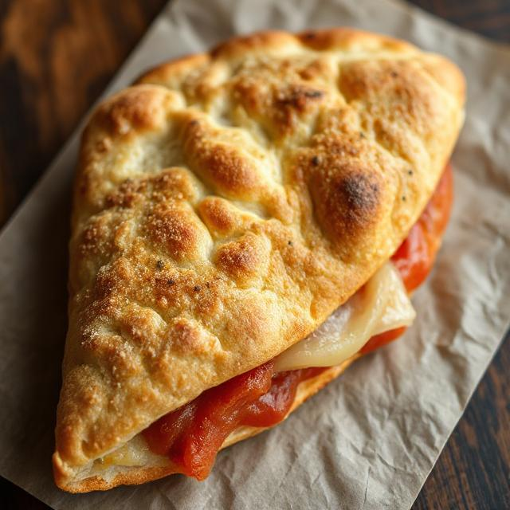

Classic Homemade Calzone Recipe

Prep Time: 2 hours
Cook Time: 20-25 minutes
Total Time: 2.5 hours
Servings: 4 calzones
For the Dough:
- 3½ cups (440g) all-purpose flour
- 1 cup (240ml) warm water
- 2¼ tsp active dry yeast
- 1 tsp sugar
- 2 tbsp olive oil
- 1½ tsp salt
For the Filling:
- 2 cups (200g) ricotta cheese
- 2 cups (200g) shredded mozzarella cheese
- 1 cup (100g) grated parmesan cheese
- 2 cups (200g) cooked Italian sausage, crumbled
- 1 cup (240ml) marinara sauce
- 2 cloves garlic, minced
- 1 tsp dried oregano
- 1 tsp dried basil
- ½ tsp red pepper flakes (optional)
- 1 egg (for egg wash)
Instructions:
- In a small bowl, combine warm water, sugar, and yeast. Let it sit for 5-10 minutes until foamy.
- In a large bowl, mix flour and salt. Make a well in the center and add the yeast mixture and olive oil.
- Mix until a shaggy dough forms, then knead for 8-10 minutes until smooth and elastic.
- Place dough in an oiled bowl, cover with plastic wrap, and let rise in a warm place for 1-1.5 hours.
- While dough rises, mix ricotta, mozzarella, parmesan, sausage, garlic, and herbs in a large bowl.
- Preheat your oven to 425°F (220°C) with a baking sheet inside.
- Divide dough into four portions. Roll each into a 10-inch circle.
- On one half of each circle, spread ¼ cup marinara sauce, leaving a 1-inch border.
- Top sauce with cheese and sausage mixture.
- Fold empty half over filling and crimp edges tightly to seal.
- Cut 2-3 small slits in the top for venting.
- Beat egg with 1 tablespoon water and brush over calzones.
- Bake for 20-25 minutes until golden brown.
- Let rest for 5 minutes before serving.
Pro Tips:
- Don't overfill the calzones or they may burst during baking.
- Serve with extra warm marinara sauce for dipping.
- Feel free to customize the filling with your favorite pizza toppings.